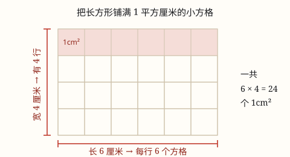

面积和面积单位
面积说的是一个面有多大。要量它，就得拿一个同样大的小正方形去铺，这个小正方形的大小就是面积单位。
| 所属主题 | 图形的认识与测量 |
|---|---|
| 所属模块 | 图形与几何 |
| 课标学段 | 第二学段（3~4年级） |
| 核心素养 | 量感空间观念 |
教材定位
人民教育出版社《2024年版》
对应三下第 4 单元「图形的面积」：面积的意义与面积单位。
课标要求
| 图形与几何·图形的认识与测量 | 认识长度单位千米，知道分米、毫米；认识面积单位厘米²、分米²、米²；能进行简单的单位换算；能恰当地选择单位估测一些物体的长度和面积，会进行测量。 印刷第 29 页 行为动词：理解 |
|---|---|
| 图形与几何·图形的认识与测量 | 结合实例认识周长和面积；探索并掌握长方形、正方形的周长和面积的计算公式。 印刷第 30 页 行为动词：掌握 |
说明
面积说的是一个面「占多大地方」。课桌面比铅笔盒面大，说的不只是它更长，而是它整个面铺开来占的地方更大——这个「面的大小」就是面积。
量长度用的是一把尺，量面积要用一个小正方形去铺。边长 1 厘米的正方形，面积记作 1 平方厘米（1 \textcm^2）；边长 1 分米的正方形是 1 平方分米（1 \textdm^2）；边长 1 米的正方形是 1 平方米（1 \textm^2）。
注意单位里那个「平方」：它不是「厘米」换了个说法，而是提醒你——这是在数能铺多少个这样的小正方形。
使用场景
买东西时估个大小：买桌布、买地垫、买贴纸，先看它要盖住多大的面，才知道买多大尺寸。
装修和铺装：铺地砖、刷墙、铺草坪，工人算的都是面积，材料也是按面积买的。
比较两个面哪个大：两块田、两张纸、两个国家的地图，说「谁大」比的就是面积。
选单位的时候：指甲盖大小用平方厘米，课本封面用平方分米，教室地面用平方米——选错单位，数出来的个数会大到不好读。
注意点
周长和面积不是一回事。周长是绕一圈有多长，用尺子量；面积是面有多大，用小正方形铺。一个图形周长相等，面积不一定相等。
写面积一定要带单位，而且单位要写「平方」。只写 24 不写 \textcm^2，别人不知道你说的是面积还是个数。
单位要选得合适。量教室地面别用平方厘米——那会得到一个几万的大数，念都念不清。
为什么是这样

图 1：用 1 平方厘米的小方格铺满长方形，一共铺了 6 × 4 = 24 个
算理推导
想知道一个面有多大，最朴素的办法就是拿一个标准的小正方形去铺，看能铺多少个。这就是所有面积单位的来历。
规定：边长 1 厘米的正方形，面积就是 1 平方厘米。于是「这个面有多大」就变成了「能铺几个这样的正方形」。
看图 1：长 6 厘米的长方形，横着每行正好放 6 个 1 厘米的小正方形；宽 4 厘米，说明能放 4 行。
所以一共能铺 6 × 4 = 24 个，面积就是 24 平方厘米。「长 × 宽」只是在数一共有多少个方格，不是凭空冒出来的公式。
动手实验
剪一些边长 1 厘米的小正方形纸片，铺在橡皮面、扑克牌、课本封面上，数一数各铺了多少个。再换边长 1 分米的大正方形铺课桌面，你会发现：换成更大的单位，铺出来的个数就变少了——同一个面，单位越大，个数越少。
按场景的例题
例 1（场景：计量与估算） 估一估数学书封面有多大
数学书封面大约长 26 厘米、宽 18 厘米，它的面积大约是多少平方厘米？
解：每行大约放 26 个 1 平方厘米的小方格，能放 18 行，一共 26 × 18 = 468 个。
答：大约 468 平方厘米。
例 2（场景：校园生活） 给教室地面铺边长 1 米的地垫
教室地面长 9 米、宽 6 米，用边长 1 米的正方形地垫铺满，需要多少块？教室面积是多少？
解：每行放 9 块，能放 6 行，一共 9 × 6 = 54 块。每块是 1 平方米，所以面积就是 54 平方米。
答：需要 54 块，教室面积 54 平方米。
例 3（场景：绿化照明） 比较两块花坛哪个大
一块花坛长 5 米、宽 2 米，另一块长 4 米、宽 3 米。哪块面积大？大多少？
解：第一块 5 × 2 = 10 平方米，第二块 4 × 3 = 12 平方米。12 - 10 = 2。注意两块周长都是 5+2+5+2=14 米和 4+3+4+3=14 米，周长一样但面积不同。
答：第二块大，大 2 平方米。
常用推论
面积 = 每行个数 × 行数，也就是把「铺方格」这件事写成乘法。
同一个面，用的面积单位越大，量出来的个数越少；单位越小，个数越多。
周长相等的图形，面积不一定相等（见例 3）。
易错点
错认为「封面长 26 厘米、宽 18 厘米，周长和面积都是 88」。
为什么错把周长算式 (26+18)× 2 和面积算式 26 × 18 混在一起算了。周长是绕一圈的长度，面积是面的大小，两件事的数和单位都不同。
正确周长是 (26+18)× 2 = 88 厘米；面积是 26 × 18 = 468 平方厘米。分开算，单位也不同。
错答「面积是 24」，不写单位。
为什么错面积是一个「个数 × 单位」的结果，只写数字等于没说清一格有多大。
正确写成 24 平方厘米（24 \textcm^2）。
错量教室地面用平方厘米，算出 540000。
为什么错单位选得太小，数出来的个数太大，既难读也容易写错零的个数。
正确教室地面用平方米：54 平方米。
直观理解
把面积想成「铺地砖」：你不是在量一条线，而是在数要买多少块砖才能铺满。砖越小，要买的块数越多；砖越大，块数越少。面积单位就是那块「标准砖」的大小。
量面积，用方块，边长一厘米一小块；铺满几块就几平方，平方厘米 cm² 记心上。